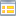
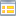
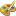
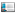

Topology Map
This module was intended for documentation purposes, even though it features interactive handling now. Refreshing every 10 minutes it can also be used to observe traffic, errors, broadcasts, discards, cpu usage or temperature of devices. Maps are written on a per user basis to html/log. Upon accessing this module the last map will be displayed without interactive features.
- Graphs are only drawn in PNG and only for the 1st time the map is generated, because they'll be deleted afterwards. This may be a problem, if you wish to save the picture (screenshot always works, though).
- Alternatively SVG or even interactive D3js maps can be created. Drag a node to fix it on the canvas. Doubleclick to let it float again.
- "PNG"png" generates truecolor, "8bit" generates 256 color png images respectively. They can be included in the combination report or various lists.
- SVG is used for vector drawings, which can be imported by other applications. You probably want to use "shapes" instead of "icons" unless you copy them into the right place on the destination.
- Hover over the input fields and icons to get hints.
- If you enable dynamic-edit (far right walk-icon above "Execute"), the map will be redrawn upon any input and fields are disabled if they're of no use with the current settings. This works best if the browser supports HTML5 properly.
- To get a feel for this rather complex part of NeDi, click on the  icons in other modules to create maps in different contexts.
- A "geo" map finds the best suited background image automatically. E.g. the regional one, if you're only drawing the "Shire" region and you've uploaded a background.jpg to topo/Shire with System-Files for example.
- Assuming you've edited this region with Loced before, it'll now use the city coordinates, you've entered to put the city icons. If you draw at building level, they'll simply be arranged around the city coordinates in a ring.
Internally maps are calculated using polar coordinates, where each level (e.g. a city) forms a ring. Devices are arranged based on their neighbors. This does not always work out, but generally yields acceptable results after some tweaking. The following sections explain how this is done.
Filter
- Same as the filter section in the list modules.
Main
- Title of Map
- Size (can be adjusted in URI) and output format of map
- For hierarchical maps use "bld" (draws buildings with floors) or "ring" (draws buildings as circles). This lets you draw region, city or building level maps leveraging SNMP location information formatted
as described on the NeDi homepage.
- The "geo" type relies uploaded backgrounds and information you've added with Loced
- Alternatively you can select "flat" which still gives you the ability draw maps without any location awareness but display non-SNMP devices or even nodes
-  adds an additional conditions to filter on SNMP devices only
 defines the center of your map
defines the center of your map
- Rotate map at top, city or building level
Layout
- defines how links are presented. Lengh/level determines how much shorter a link between buildings is going to be than a link between cities for example. The next field defines the offset from the link endpoint for interface information (if displayed)
 length sets the top-level link length (can be looked at zoom-level too). They're drawn "straight" as default, but sometimes you'd prefer an "arc"
length sets the top-level link length (can be looked at zoom-level too). They're drawn "straight" as default, but sometimes you'd prefer an "arc"
- Link Information can be bandwidth or even a RRD graph. It can be moved away from the center, if it gets in the way of other items
 defines how map-nodes are represented. Positive numbers use the position in the topology, negative just number of neighbors to determine its distance from the center
defines how map-nodes are represented. Positive numbers use the position in the topology, negative just number of neighbors to determine its distance from the center
 Floor size sets the building size when actual devices are drawn in hierarchical maps. This value can be as small as 8 if "Tiny Shapes" is selected above to generate a bird-eye view of your network
Floor size sets the building size when actual devices are drawn in hierarchical maps. This value can be as small as 8 if "Tiny Shapes" is selected above to generate a bird-eye view of your network
- Columns lets you control how wide those buildings are represented
Show
- Add various details to the map
 NeDi Help
NeDi Help